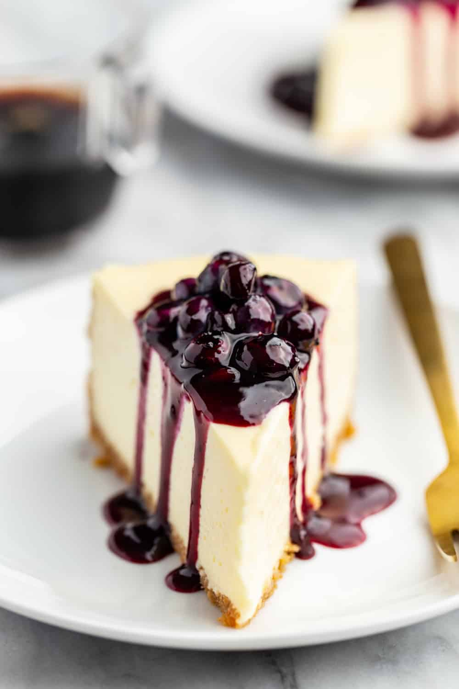

Blueberry Sauce

Ingredients
- 2 cups fresh or frozen blueberries
- 1/2 cup water
- 1/2 cup granulated sugar
- 2 tablespoons fresh lemon juice
- 2 tablespoons cornstarch
- 1/2 teaspoon vanilla
- Zest of 1 lemon
Ingredients
- In medium saucepan over medium heat, combine water, sugar, & lemon juice, stirring frequently. Bring to low boil
- In small bowl, whisk cornstarch and 2 tablespoons cold water
- Slowly stir cornstarch into the blueberries. Simmer until sauce is thick enough to coat the back of the spoon.
- Remove from heat and gently stir in vanilla and lemon zest